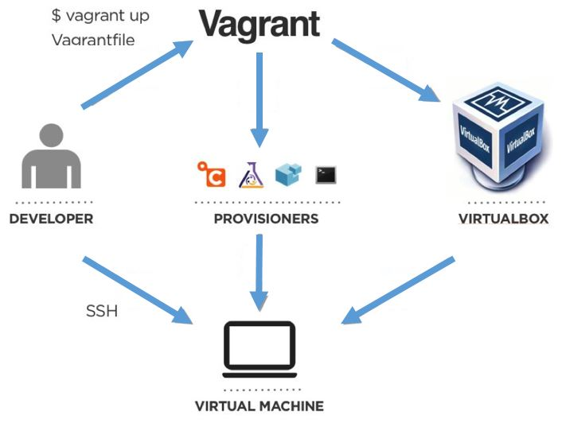

Ansible for VM provisioning
Intro
Vagrant:
- Open-source tool that allows us to configure lightweight, reproducible, and portable virtual software development environments on top of virtualization with e.g. VirtualBox, VMware, Hyper-v, Docker or AWS.
- In short, it can use Virtual Box to provide and launch virtual machines.
- All of the configuration necessary for machine launching is palced in one file named “Vagrantfile” which is written in Ruby.
- Once machines launched, we can continue with further configuration with so-called provisioners like Ansible.
- Provisioners are baing applied for provisioning hence installing dependencies, automation, configuration management and orchiestration.
Ansible:
- We can use Ansible for automation of Vagrant machines requirements provision and software dependencies setup.
- Ansible works with Playbooks written as YAML YAML (Yet Another Markup Language) files which provides Infrastrucutre as a Code (IaC).
- Playbooks describe a desired state that we want to apply to a machine.
- By providing a state I mean to configure the virtual machine according to the tasks listed in a Playbook.
- Ansible allows you to write declarative code (YAML is a declarative language) in a playbook which means while inputting tasks you focus on what you want rather than how to achieve it. Then, tasks are processed by underlying code which is platform-specific procedural code.
- In the Playbook we can configure a play for a specific host (virtual machine or server) or for all hosts.
Workflow:
source: www.softqubes.com
- Creating Vagrantfile.
- Discribing the machine(s) type needed as well as all configuration and provision.
- Running Vagrantfile creation.
- Vagrant uses VirtualBox as a provider.
- Vagrant invokes a provisioner to configure state of the machine(s).
- The provisioner (Ansible) provisions the machine(s).
- Developer can access machine with SHH.
- All steps so far are automated and reusable.
Features
App includes following features:
Demo
Vagrant
- Creating vagrant file with base ubuntu box:
vagrant init -m bento/ubuntu-16.04
- it gives us the basic vargant file with ubuntu vm box:Vagrant.configure("2") do |config| config.vm.box = "bento/ubuntu-16.04" enddo |config|means we load Vagrant API ver. 2 and assign it to varaible named config. - Extending basic vargant file with:
- port exposition,
- anisible provisioner.Vagrant.configure("2") do |config| config.vm.box = "bento/ubuntu-16.04" config.vm.network "forwarded_port", guest: 5000, host: 5000 config.vm.provision "ansible_local" do |ansible| ansible.playbook = "setup.yml" end end- Installing and running Ansible on VirtualMachine (no need for running it on host computer).
- Anisible provisioner provides the setup.yml playbook. - Running ubuntu server box (Ubuntu VirtualMachine):
vagrant up - When any changes to a playbook in vagrantfile then:
vagrant provision
Ansible
- With Anisible we can perform provisioning a Virtual Machine created with Vagrant.
--- - hosts: all become: yes tasks: - name: Install Python 3.6 apt: name: python3.6 state: present update_cache: yes- We apply provisioning to all virtual machines withhosts: all.
- Settingbecome: yesresult with running tasks with sudo prefix on ubuntu's terminal.
- First task we nameInstall Python 3.6.
- Then we useaptto let using the apt module.
- And then we indicate the name of package we want to insall:name: python3.6.
- Setting the package's state to present on the machine bystate: present.
- Letting apt cache to update (command: apt update) before installing (command: apt install) withupdate_cache: yes. - Creating virtual environment on Virtual Machine:
- name: Install pip3 apt: name: python3-pip state: present update_cache: yes - name: Install 'virtualenv' package pip: name: virtualenv executable: pip3 - name: Create virtualenv become: no pip: virtualenv: "/home/vagrant/venv" virtualenv_python: python3.6 requirements: "/vagrant/requirements.txt"There are following tasks:
1. Pip3 installation with apt module.
2. Virtual environment installation into ubuntu system's interpreter with Ansible's pip module.
3. Creating virtual environment with pip moduel and requirements installation (Vagrant creates project directory /vagrant in the VM). - Using modules apt_key and apt_repository in order to get Personal Package Archive (PPA) from where we can install Python.
Python 3.6 isn’t available from Ubuntu’s default package repositories.
- name: Add key for jonathonf PPA apt_key: keyserver: keyserver.ubuntu.com id: 4AB0F789CBA31744CC7DA76A8CF63AD3F06FC659 state: present - name: Add jonathonf PPA apt_repository: repo: deb http://ppa.launchpad.net/jonathonf/python-3.6/ubuntu xenial main state: present- we should be keeping above tasks above that ones related to Python's installation.
Setup
Following installation reuqired:
- Vagrant installation from: https://www.vagrantup.com/